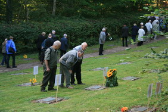
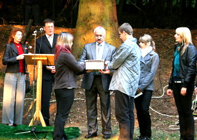
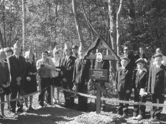
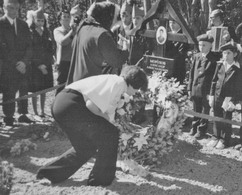
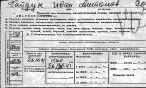

ноябрь 2009 года
БЕЗЫМЯННЫХ СОЛДАТ СТАНЕТ МЕНЬШЕ
По приглашению немецкой стороны президент фонда «Жить и помнить» Леонид Мусин побывал в Германии и принял участие в торжественных мероприятиях, посвященных пятидесятилетию мемориального кладбища в Херлесхаузене..
Херлесхаузен - едва ли не единственное на территории Германии именное массовое захоронение советских военнопленных. По сведениям муниципалитета Херлесхаузена на мемориальном кладбище захоронено 1539 советских военнопленных. В могиле по четыре - пять человек. Над каждой могиле бронзовая надгробная плита с указанием имен. 
Мемориальное кладбище советских военнопленных в Херлесхаузене поддерживается в надлежащем состоянии. За могилами ухаживают школьники, почти ежегодно на кладбище работают интернациональные бригады молодежи. Муниципалитет Херлесхаузена и лично Бургомистр г-н Гельмут Шмидт уделяют мемориалу самое серьезное внимание, ведут переписку с родственниками захороненных, организует посещение ими кладбища.
Сотрудниками фонда «Жить и Помнить» установлены имена солдат – уроженцев Тверской области, захороненных на (Германия). Ведется поиск родственников погибших. Благодаря сложившимся дружеским связям с бургомистром Херлесхаузена организованы поездки родственников к месту захоронения.
Леонид Мусин принял участие в установке именных плит на мемориале. Ухаживающие за кладбищем немецкие школьники вручили ему мешочки с землей с могил для передачи родственникам погибших.
Также в церемонии приняли участие дочь пропавшего без вести солдата, чьи место захоронения – Херлесхаузен было найдено фондом, Людмила Устинова и члены ее семьи (Об этом – дочь Людмилы Устиновой Ирина Иванова в материале «Навсегда в моей памяти!»).
Благодаря сотрудничеству общиной Херлесхаузен безымянных советских солдат и офицеров станет меньше. |

ОТ РЕДАКЦИИ
Приветствуем читателей издания Фонда «Жить и Помнить», всех, кому небезразлична судьба военнослужащих, пропавших без вести в сражениях Великой Отечественной войны. Благодарим за отклики, за искреннюю сердечную поддержку нашей работы.
Начиная с этого номера, наше издание будет распространяться не только в Тверской области, но и в других регионах Центрального округа. Фашистская пуля не спрашивала солдата, откуда он родом. Поднимая безымянные захоронения на Верхневолжье, поисковики находят уроженцев всех уголков Советского Союза. Также и наши калининские солдаты нашли свой последний покой не только в России, но и на солдатских кладбищах по всей Европе.
Мы убеждены, что поиск пропавших без вести должен стать делом общероссийского значения. Именно в этом случае мы – внуки и правнуки солдат Второй мировой в день 65-летия Великой Победы сможем, не испытывая стыда, глядеть в глаза ветеранов, их жен и детей.
|
НА БРАТСКИХ МОГИЛАХ СТАВЯТ КРЕСТЫ
1 сентября 2009 года на месте не учтенного госпитального захоронения у деревни Ярково Заволжского сельского поселения Калининского района при содействии Фонда «Жить и Помнить» установлен Памятный крест.
Здесь в двух братских могилах в период с 23 по 30 октября 1941 года захоронены 17 воинов, умерших от ран в 265 отдельном медицинском санитарном батальоне 246 стрелковой дивизии. Эта стрелковая дивизия в составе 29 Армии Калининского фронта во второй половине октября 1941-го, самые тяжелые дни битвы за Калинин, вела боевые действия в районе населенных пунктов Даниловское, Мотавино, Опарино, Гильнево, Сухого Ручья, Борков.
После этих боев в донесении командующему Калининским фронтом генерал-полковнику Коневу командарм 29-й армии генерал-лейтенант Масленников докладывал: «В течение шести суток активные наступательные действия 246-й стрелковой дивизии, усиленной одним полком 243-й стрелковой дивизии (912 сп) и одним спешенным полком 46-й кавдивизии, ожидаемого успеха не дали. Даниловское нами четыре раза захватывалось, но удержать не могли... В полках осталось по 150–170 штыков».
Почтить память павших защитников Калинина пришли представители администраций района и сельского поселения, военного комиссариата, ветераны и школьники. Участие в митинге, посвященном этому событию, приняли родственники одного из погибших, красноармейца Морозова Александра Александровича.
Сотрудниками нашего фонда установлены имена всех захороненных и собраны сведения о каждом из них.
29 сентября в Тверской торгово-промышленной палате представителям администрации Заволжского сельского поселения и Болшеборковской средней школы для школьного музея были переданы список захороненных и копии оригинальных документов каждого погибшего солдата: вкладные листы солдатских медальонов, медицинские карточки, медицинские справки, извещения о призыве, мобилизационные предписания, денежные аттестаты и другие.
Но на этом работа не закончена. По учетным данным военного комиссариата Калининского района, шестеро из захороненных после войны были перезахоронены в братскую могилу в деревне Степаньково. Где находятся останки ещё одиннадцати человек пока не ясно. Ответ на этот вопрос может дать только разведка места первичного захоронения. С просьбой об этом к тверским поисковикам обратились администрация поселения и Фонд «Жить и Помнить». Если поисковики обнаружат там останки, то на тверской земле появится еще одна братская могила, которую нужно будет соответствующим образом учесть и обустроить. |
НАВСЕГДА В МОЕЙ ПАМЯТИ!
Приближается 65-я годовщина победы советского народа в Великой Отечественной войне. Кажется, что прошло много лет, сменилось несколько поколений людей, но воспоминания о тех событиях живы в памяти народной. Они по-прежнему волнуют людей.
Этой осенью наша семья совершила поездку в Германию на могилу моего деда Александра Устинова. Сначала немного истории. Мой дед Устинов Александр Филаретович родился в 1902 г. в г. Чистополь Татарской АСР. Когда он был ребенком, его семья переехала в г. Оренбург. Дальше была жизнь, наполненная разными событиями: успешная учеба в гимназии, романтическая история женитьбы, рождение троих детей, работа в качестве бухгалтера. Но пришел 1941 год, и в 8 августа А.Устинов был призван на фронт. На сборы дали всего 2 часа, и главное, что успела семья сделать за это время, - общую фотографию. Городской житель с очень мирной профессией стал старшим лейтенантом и был направлен служить в кавалерийскую часть. Сначала было кратковременное обучение в Тоцких лагерях под Оренбургом. Учиться приходилось всем: и людям, и лошадям, ведь животные были необъезженные. Далее вновь сформированную часть направили под Москву, на Калининский фронт. Воевал он более года, подразделения 43-й отдельной кавалерийской дивизии совершали рейды в тыл врага. Зимой и летом с шашкой по лесным тропам, иногда, по рассказам очевидцев, против танков. В 21 веке это уже довольно сложно себе представить. «Погромили мы фашистов», - рассказывал дед в одном из писем семье.
Летом и осенью 1942 г. шли крупные бои на Смоленщине. В окружение в Вяземском котле попали несколько армий. Среди участников этих событий оказался и Александр Устинов. Нам неизвестны подробности дальнейших событий. В январе 1943 г. семья получила извещение о том, что мой дед пропал без вести. Много раз семья писала запросы в центральный архив Министерства обороны в Подольске, в другие организации, чтобы узнать о его дальнейшей судьбе. Ответ был всегда один и тот же: в списках не значится, информации об Александре Устинове нет. Маленькую ниточку надежды родным давал рассказ жителя г. Оренбурга Г.Ф. Храмова, вернувшегося после войны домой, о его встрече с А.Устиновым в одном из немецких концентрационных лагерей. К сожалению, в те времена, когда любой плененный солдат считался врагом народа, получить более подробную информацию не удалось.
|
|
|